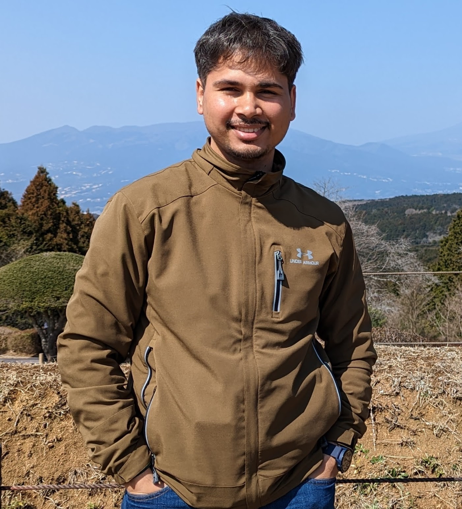
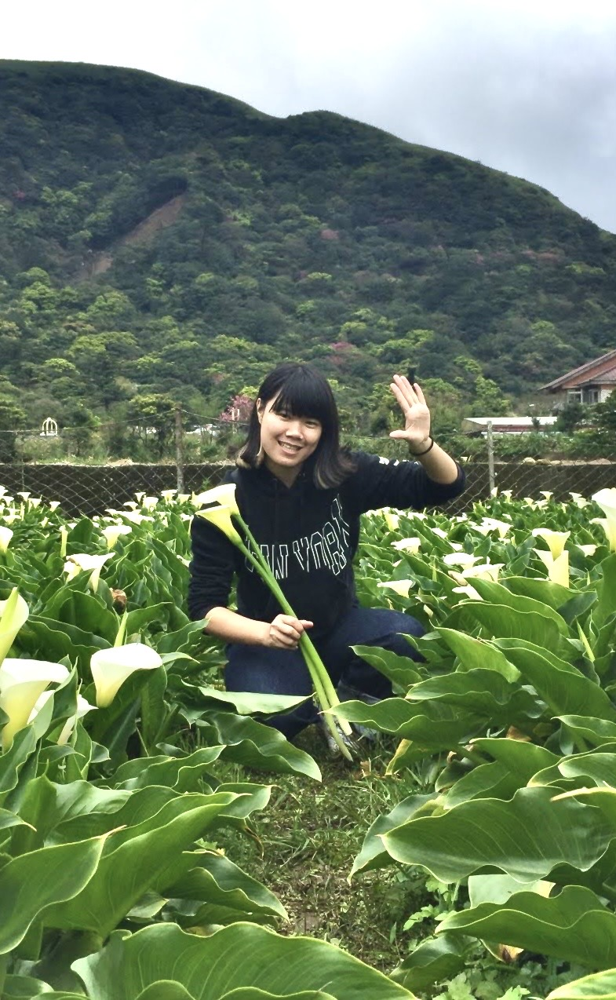

Gabriel Louw
“Climate Change Impacts on Groundwater Levels in Napier, New Zealand.”
Undergraduate Researcher, Schreyer Honors Thesis (October 2024 - May 2025).

PhD Student
B. Eng., Civil Engineering, IOE, Tribhuvan University, Nepal
M.S., Geotechnical Engineering, Tokyo Institute of Technology, Japan
My name is Aavash Ghimire. I joined Yost Research Group in Fall 2023. My research is currently focused on the linkage between hydroclimatic changes and geotechnical earthquake hazards, specifically liquefaction. I love soccer, hiking, exploring movies, and listening to podcasts.

PhD Student
B.S. National Taiwan University of Science and Technology (NTUST)
M.S., National Taiwan University (NTU)
I am Irene Peng from Taiwan. I hold a Bachelor's degree from National Taiwan University of Science and Technology (NTUST) and a Master's degree from National Taiwan University (NTU). My primary research focused on slope stability, exploring issues related to natural slopes and excavated slope failures. In Fall 2024, I joined Yost's team to further advance numerical simulation applications in geohazard issues, particularly in designing disaster warning systems under extreme climatic conditions.
“Climate Change Impacts on Groundwater Levels in Napier, New Zealand.”
Undergraduate Researcher, Schreyer Honors Thesis (October 2024 - May 2025).
“Documenting Levee Infrastructure and Related Flood Hazards in the Susquehanna River Basin.”
Undergraduate Researcher, WISER/MURE/FURP Program. (January 2024 - December 2024).
“Rising Water, Rising Concerns: Levee Residual Risk in the Susquehanna River Basin.”
Undergraduate Researcher, Penn State Climate Science REU Program. (May 2024 - August 2024).